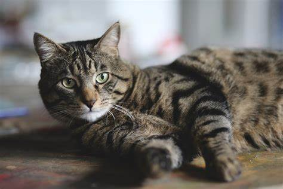

| Voyage | Passion | Animaux |
|---|
| Chien | Chat | Lapin |
|---|
Le Chat domestique est la sous-espèce issue de la domestication du Chat sauvage, mammifère carnivore de la famille des Félidés. Il est l’un des principaux animaux de compagnie et compte aujourd’hui une cinquantaine de races différentes reconnues par les instances de certification. Dans de très nombreux pays, le chat entre dans le cadre de la législation sur les carnivores domestiques à l’instar du chien et du furet.